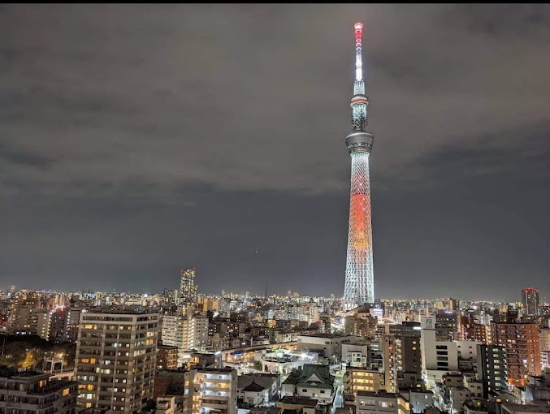
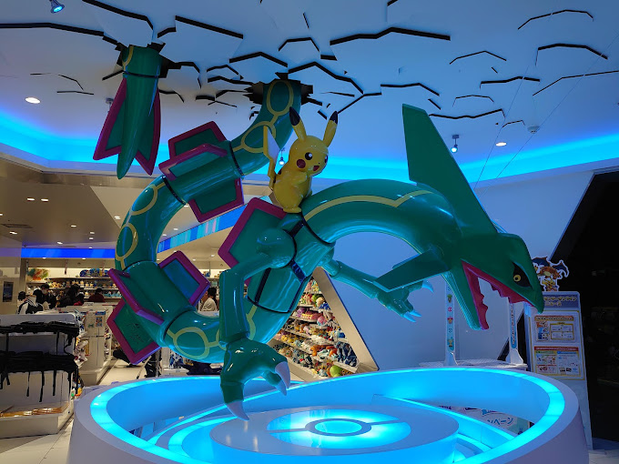
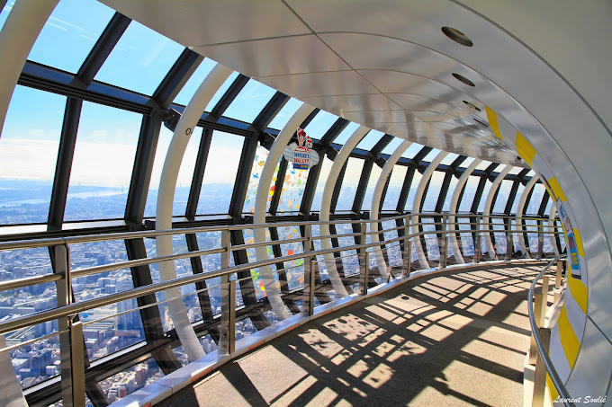
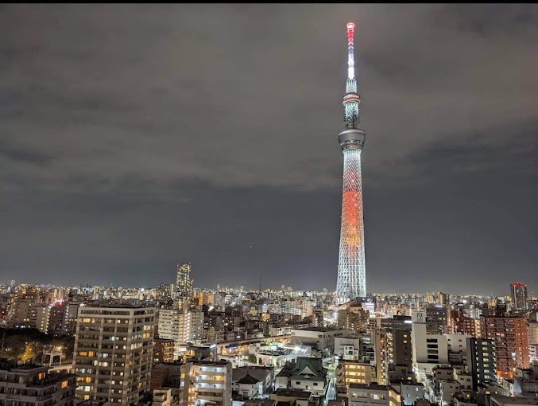
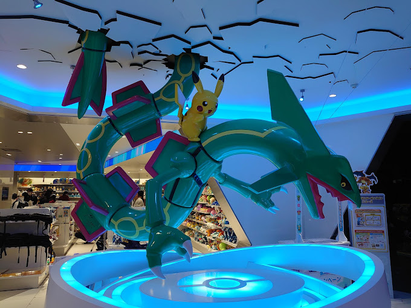
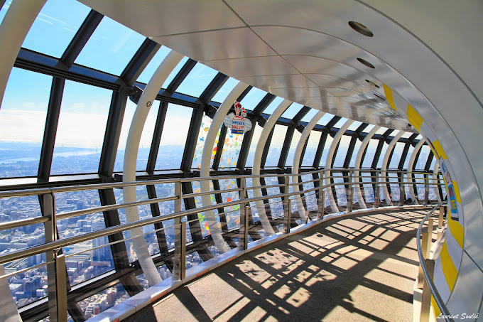

TOURIST SPOT
TOKYO SKYTREE
• Tokyo Skytree, is a broadcasting and observation tower in Sumida, Tokyo.
• It became the tallest structure in Japan in 2010 and reached its full height of 634 meters in March 2011, making it the tallest tower in the world, displacing the Canton Tower,
 




